A few weeks ago, I saw someone ask for resources to customise the cover page of a Quarto Typst book. Since Quarto 1.9, a Typst book uses the orange-book template by default, as the 1.9 changelog says. So the question is a fair one. I use a handful of Typst tricks in my Quarto Typst format extensions, so I thought I would share them.
This post shows ten of them as small partials. They make a PDF look professional, and none of them makes it less accessible. Professional does not mean inaccessible. Each one is a separate file that you can copy and edit. They work on any Quarto Typst document, but a book needs a few changes. Each callout titled “Accessibility” explains how that trick keeps the PDF accessible.

1 How Partials Work
Quarto builds a Typst PDF in two steps. First, it turns your document into a Typst source file. Then Typst compiles that file into the PDF.
A partial is a file that Quarto pastes into that Typst source. It holds a few lines of Typst, such as a set rule or a show rule. Quarto offers two ways to load one.
include-in-headeradds your file to the top of the Typst source, after Quarto’s own setup. Your rules then apply to the whole document. The Typst format page describes this option.template-partialsreplaces one of Quarto’s own partials with your file, under the same name. The custom Typst formats page lists which partials you can replace. The default partials are on GitHub. They are the best place to read what you are replacing.
All ten tricks load through include-in-header. The title block also needs template-partials. If you want to go further and package your partials as an extension, my post on the document dispatcher is the next step.
2 The Demo Project
I made the screenshots and ran every test in this post with Quarto 1.11.9, the current stable release, which ships Typst 0.15.1. I did not test other versions.
The demo has no _quarto.yml. The demo is a short report, _report.qmd, whose front matter holds the title, subtitle, kicker, date, lang and number-sections keys. Add this format block to that front matter to build it with all ten partials, as they stand after the last trick.
format block of each step
format:
typst:
1 pdf-standard: ua-1
2 include-in-header:
- partials/1-tokens.typ
- partials/2-header-footer.typ
- partials/3-headings.typ
- partials/4-code.typ
- partials/5-tables.typ
- partials/6-captions.typ
- partials/7-title-block.typ
- partials/8-page-stripes.typ
- partials/9-cover.typ
- partials/10-cover-decoration.typ
template-partials:
- typst-show.typ- 1
-
Ask Typst for a tagged PDF that follows PDF/UA-1, with the
pdf-standardoption. The Typst accessibility guide explains what the standard asks for. Typst checks the PDF against the standard and tags it, andpdfinforeportsTagged: yesfor the final demo. In my tests, an image with no alt text stops the build with the errorPDF/UA-1 error: missing alt text. - 2
- Load the partials in this order. Removing a line removes that trick, unless a later partial needs it.
Some partials need an earlier one.
- Every partial after the first reads the colours and fonts of
1-tokens.typ. 8-page-stripes.typneeds2-header-footer.typ, and10-cover-decoration.typneeds9-cover.typ.9-cover.typandtypst-show.typneed7-title-block.typ.- The others, such as
3-headings.typand4-code.typ, need only the first partial.
The heading numbers come from number-sections: true in the front matter of _report.qmd, because Quarto sets the numbering after the partials run. The report, the ten partials and typst-show.typ are in the post folder on GitHub.
3 Two Ways to Load a Partial
The demo uses include-in-header, but Quarto offers a second way. You list your own files under template-partials, and you call each one from a partial that you override, with $name.typ()$. It is the way that quarto-mcanouil loads the files of its library.
front matter
format:
typst:
template-partials:
- typst-show.typ
- partials/1-tokens.typ
- partials/2-header-footer.typ
- partials/3-headings.typtypst-show.typ
$1-tokens.typ()$
$2-header-footer.typ()$
$3-headings.typ()$
#show: doc => article(
title: [$title$],
lang: "en",
region: "GB",
doc,
)I tested this with the first three partials, and the PDF came out tagged. Put each call on its own line and leave a blank line between two calls. Without the blank line, Pandoc glues the end of one partial to the start of the next, and Typst stops with an error.
include-in-header |
template-partials |
|
|---|---|---|
| Setup | One line of YAML per file. | One line of YAML per file, plus one $name.typ()$ call in a partial that you override. |
| Where the file lands | After Quarto’s own Typst setup and before page.typ and typst-show.typ. |
Where you call it. |
| Pandoc variables | No. The file is pasted as it is, and $kicker$ stays as text. |
Yes. $title$ or $if(kicker)$ work, so a partial can read the YAML. |
| What it replaces | Nothing. | The default partial that you override, here typst-show.typ. |
| In a book | Works, as the book section shows. | Overriding typst-show.typ removes the setup of orange-book. |
| In an extension | The user has to list the files. | The extension lists them once, and the format gets them with it. |
I tested the variable row by putting $kicker$ in each kind of file. The partial printed the value of kicker in the header, and the include-in-header file kept the literal text.
My rule is simple. Use include-in-header for small tweaks that do not read the metadata, because nothing else changes. Use template-partials when a partial needs the YAML, or when you package the partials in a format extension.
4 Tokens
Keep every colour and font in one place, so changing a value changes the whole document.
partials/1-tokens.typ
// 1. Tokens: change a value here, change the whole document.
#let ink = rgb("#1f2933")
#let accent = rgb("#0b6e99")
#let muted = rgb("#586270")
#let tint = rgb("#eef3f7")
#let font-body = ("Source Sans 3", "Libertinus Serif")
#let font-heading = ("Inter", "Libertinus Serif")
#let font-code = ("Fira Code", "DejaVu Sans Mono")
#set text(font: font-body, fill: ink)
#show heading: set text(font: font-heading)
#show raw: set text(font: font-code)
#show link: set text(fill: accent)
#show link: underline| Before | After |
|---|---|
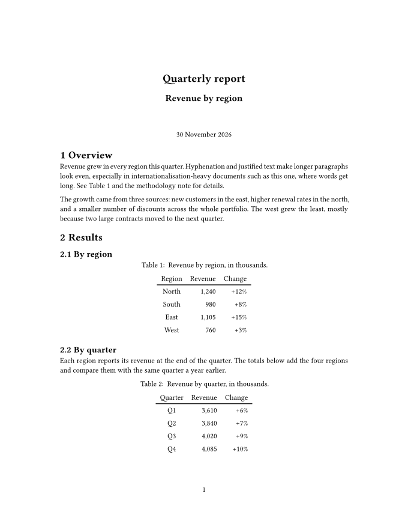 |
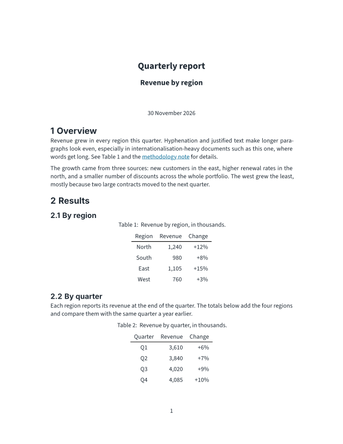 |


I computed the WCAG 2.x contrast ratios of these colours with a short script.
- Ink on white is 14.76:1.
- Accent on white is 5.67:1, and so is white on accent.
- Muted on white is 6.18:1, and muted on the tint is 5.54:1.
Body text needs at least 4.5:1, so every pair passes. Links are underlined, so they do not rely on colour alone.


6 Headings
Colour the heading numbers and keep a heading from being stranded at the bottom of a page.
partials/3-headings.typ
// 3. Headings: coloured numbers, never stranded at the bottom of a page.
#show heading: it => block(sticky: true, above: 1.6em, below: 0.8em)[
#if it.numbering != none {
text(fill: accent, counter(heading).display(it.numbering))
h(0.5em)
}
#it.body
]| Before | After |
|---|---|
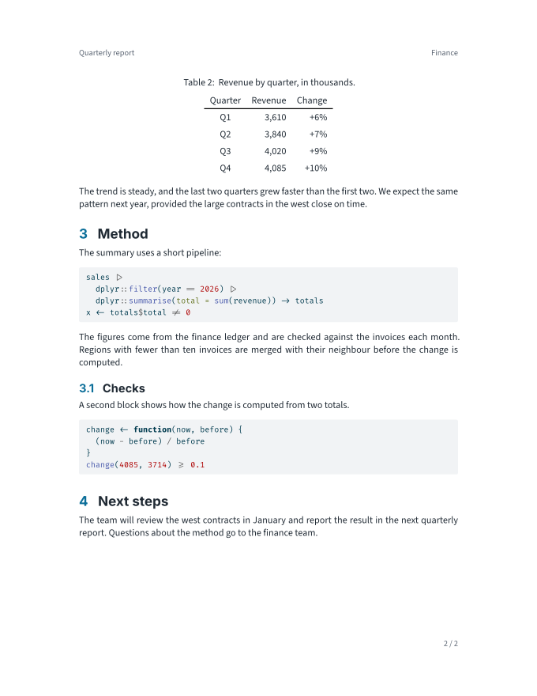 |

The partial restyles real headings. It does not fake them with big text, so the PDF keeps its heading structure. The numbers come from number-sections: true, because Quarto’s article() sets the numbering after the partials run. The partial only styles the number.
7 Code
Show code in a calm light block that never splits across pages and never turns characters into symbols.
partials/4-code.typ
// 4. Code: no ligatures, no page break inside a block, light background.
#show raw: set text(ligatures: false, features: ("calt": 0))
#show raw.where(block: true): set block(
width: 100%, fill: tint, inset: 0.8em, radius: 4pt, breakable: false,
)| Before | After |
|---|---|
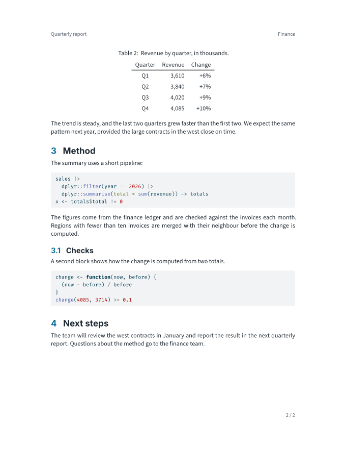 |

Code that looks different from what you typed is hard to read. With only ligatures: false, Fira Code still drew |> as a triangle, so I also turn off the calt feature with features: ("calt": 0). The symbols !=, <- and >= then show as typed. The breakable: false setting keeps a block on one page. Code text is 0.8em of the body, which is 8.8 pt, so it is a little under 9 pt. You can enlarge it with #show raw: set text(size: 9.5pt), and I use points there because an em value would apply to the already reduced size.
8 Tables
Give tables a filled header and light stripes.
partials/5-tables.typ
// 5. Tables: filled header, zebra stripes.
#set table(
fill: (_, y) => if y == 0 { accent } else if calc.odd(y) { tint },
stroke: none,
inset: 0.6em,
)
#show table.cell.where(y: 0): set text(fill: white, weight: "bold")
#show table: set text(size: 0.9em)| Before | After |
|---|---|
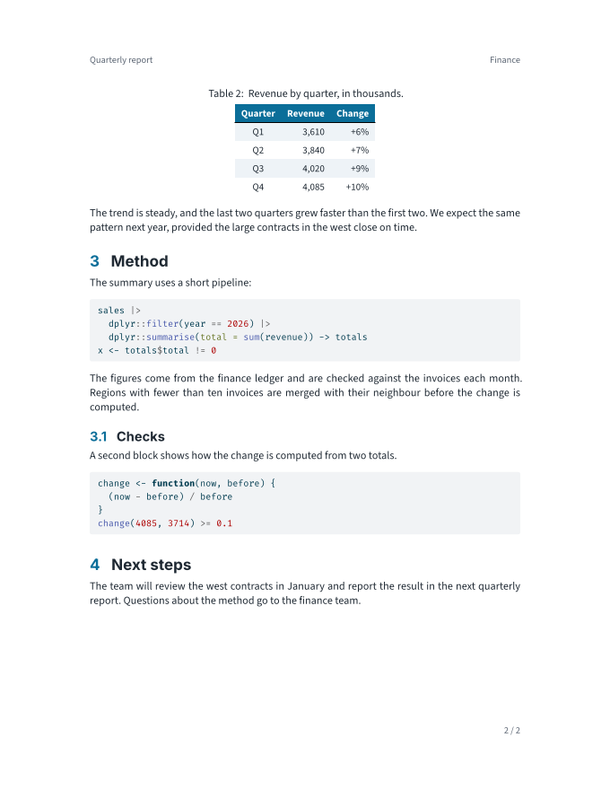 |

The partial styles the header row. It does not replace it, so the table keeps its real header row. Tagged PDFs rely on table.header to tell readers and screen readers which cells are headings. The stripes only help the eye, because the header carries the meaning and colour is never the only signal.
9 Captions
Make captions small and muted, with the label in bold.
partials/6-captions.typ
// 6. Captions: small, muted, with the label in bold when the figure is numbered.
#show figure.caption: set text(size: 0.85em, fill: muted)
#show figure.caption: it => {
if it.numbering != none and it.supplement != none {
strong(it.supplement + [ ] + context it.counter.display(it.numbering))
[. ]
}
it.body
}| Before | After |
|---|---|
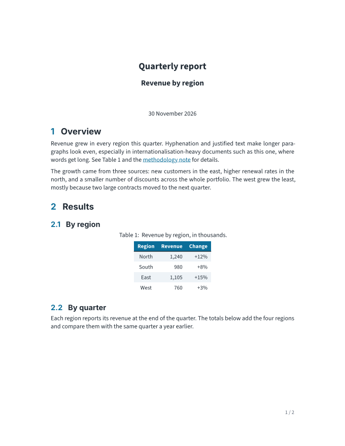 |
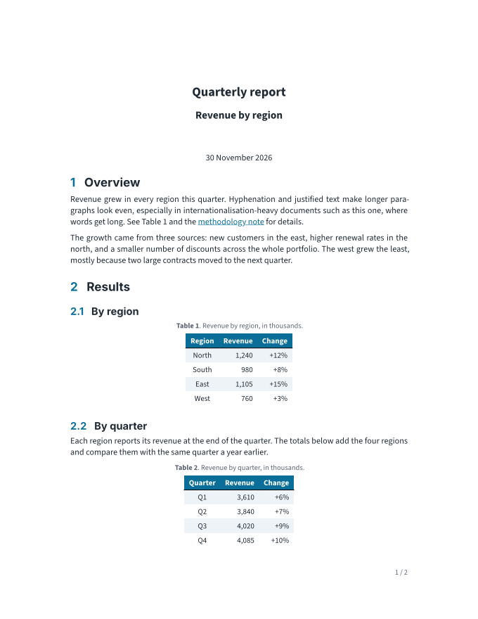 |


I first wrote a partial that justified the text and set the language. Quarto already justifies text, and it reads lang from the YAML, so that partial added nothing. Set lang: en-GB in the document and Typst uses it for hyphenation.
10 Title Block
Replace the default title with a kicker, a title, a short rule, a subtitle and a date.
partials/7-title-block.typ
// 7. Title block: kicker, title, short rule, subtitle, date.
#let title-block(title: none, kicker: none, subtitle: none, date: none) = {
if kicker != none {
text(size: 0.85em, weight: "bold", tracking: 0.14em, fill: accent, upper(kicker))
v(0.4em)
}
text(font: font-heading, size: 2em, weight: "bold", title)
v(0.4em)
pdf.artifact(line(length: 3em, stroke: 2.5pt + accent))
if subtitle != none { text(size: 1.15em, fill: muted, subtitle); v(0.2em) }
if date != none { text(size: 0.85em, fill: muted, date) }
v(1.5em)
}This one needs a second file, because Quarto decides what it passes to the title block in typst-show.typ. Quarto loads that file with template-partials.
typst-show.typ
#show: doc => article(
lang: "$if(lang)$$lang$$else$en$endif$",
$if(region)$ region: "$region$",
$endif$ sectionnumbering: $if(section-numbering)$"$section-numbering$"$else$none$endif$,
doc,
)
#set document(title: [$title$])
#title-block(
title: [$title$],
$if(kicker)$ kicker: [$kicker$],
$endif$$if(subtitle)$ subtitle: [$subtitle$],
$endif$$if(date)$ date: [$date$],
$endif$)| Before | After |
|---|---|
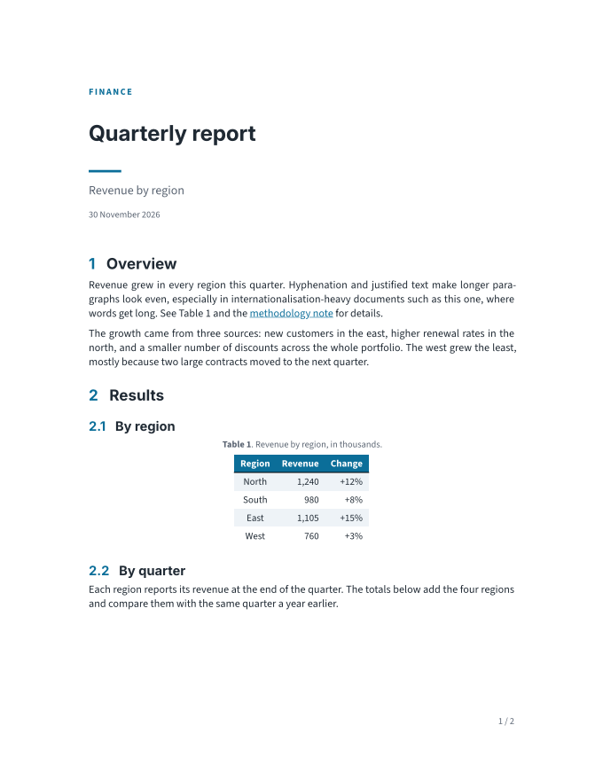 |

typst-show.typ override
This file replaces Quarto’s default typst-show.typ, so it drops what the default does. That includes fonts, the table of contents and brand settings. Read the default before you copy mine, and keep what you need.
$title$ and $kicker$ are Pandoc variables. Pandoc fills them from the YAML, and kicker is a custom field that I added to the document. My file does not pass the title to article(), which then sets the document title to nothing. So I set it below the article() call with #set document(title: [$title$]). The PDF then keeps its title for screen readers and for the running header. The short rule under the title is wrapped in pdf.artifact() to state that it is decoration. Typst already treats a line as an artifact, so the wrapper is optional here.
11 Page Stripes
Echo the cover on every page with a thick and a thin stripe at the top, and a gradient band behind the footer.
partials/8-page-stripes.typ
// 8. Recurring decoration: stripes at the top, a gradient band behind the footer.
// Typst already treats page backgrounds as artifacts; the wrapper states the intent.
#let band-gradient = gradient.linear(accent, accent.darken(55%), angle: 135deg)
#footer-ink.update(white)
#set page(background: pdf.artifact({
place(top, dy: 8mm, rect(width: 100%, height: 4mm, fill: band-gradient, stroke: none))
place(top, dy: 14mm, rect(width: 100%, height: 1mm, fill: band-gradient, stroke: none))
place(bottom, rect(width: 100%, height: 1.25in, fill: band-gradient, stroke: none))
}))| Before | After |
|---|---|
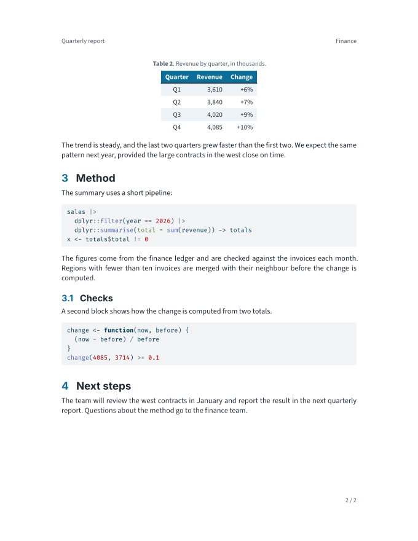 |
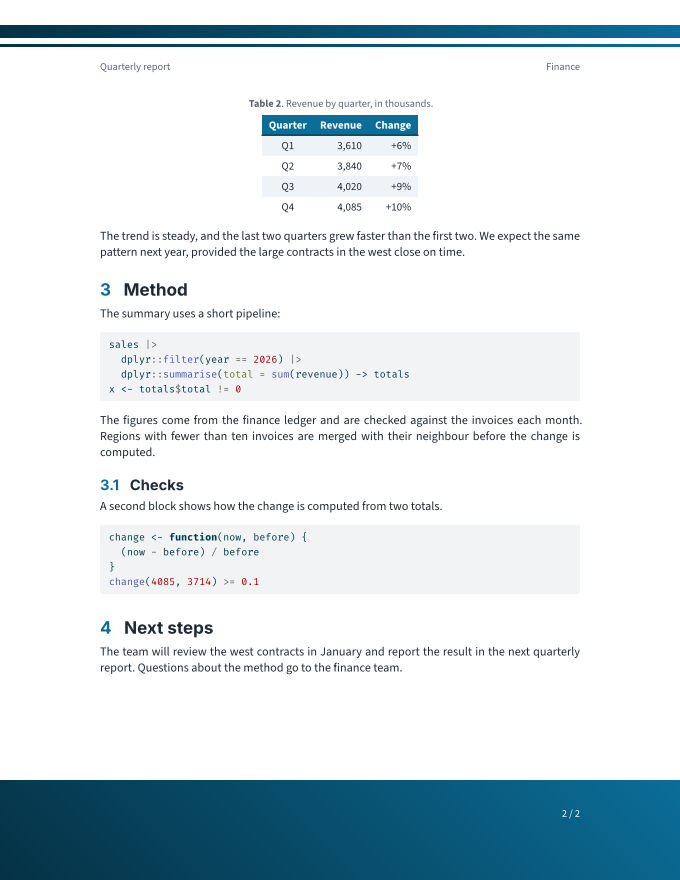 |


Screen readers should skip the stripes and the band. Typst already marks page backgrounds, headers and footers as artifacts, and it marks paths and shapes as artifacts too. I removed pdf.artifact() from a copy of the decorative partials and rendered with pdf-standard: ua-1. Neither Typst nor Quarto reported an error, and veraPDF still passed it. Quarto runs veraPDF on the PDF when you have installed it with quarto install verapdf, as the 1.9 changelog describes. So the experiment confirms it: the stripes, the band and the title rule are artifacts without the wrapper. I keep pdf.artifact() because it states the intent, and because content that Typst does not mark itself, such as a decorative image or text, needs it.
The band is dark, so trick 2 holds a footer-ink state for the footer text colour, and this partial sets it to white. White on the lightest end of the gradient, which is the accent colour, is 5.67:1. Text on a band needs its contrast checked again.
12 Cover Page
Give the title block a page of its own, centred vertically, with no header or footer.
partials/9-cover.typ
// 9. Cover page: the title block gets a page of its own.
// `cover-art` is a slot for decoration, empty until trick 10 fills it.
#let cover-art = state("cover-art", none)
#let title-block = {
let block-on-page = title-block
(..args) => page(
header: none,
footer: none,
background: context cover-art.get(),
align(horizon, block-on-page(..args)),
)
}| Before | After |
|---|---|
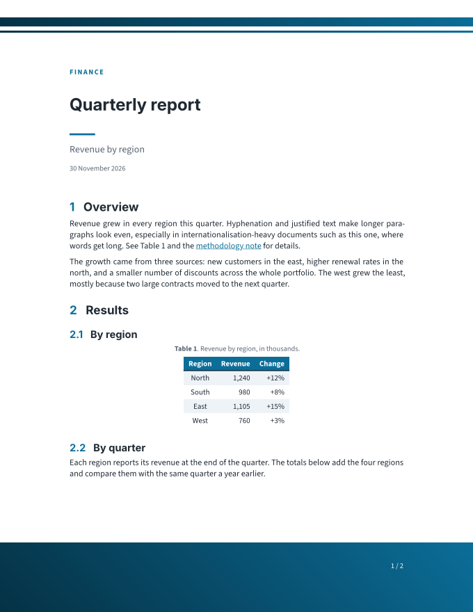 |
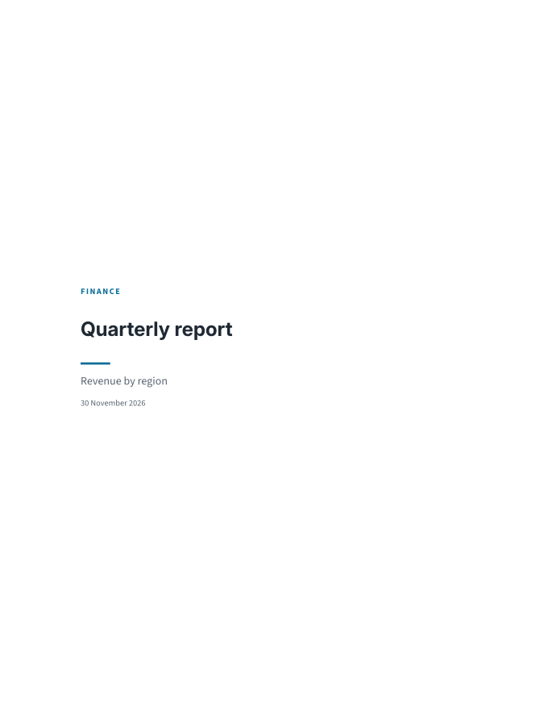 |


cover-art is a state
A Typst closure captures the variables it uses when you define it. A later #let cannot change a function that already exists. A state is read when the page is built, so trick 10 can fill the slot after this partial has run.
13 Cover Decoration
Fill the cover slot with a gradient band at the bottom and two stripes at the top.
partials/10-cover-decoration.typ
// 10. Cover decoration: a gradient band at the bottom, two stripes at the top.
// It is only shapes and holds no text; the wrapper states that it is decoration.
#let cover-gradient = gradient.linear(accent, accent.darken(55%), angle: 135deg)
#cover-art.update(pdf.artifact({
place(bottom, rect(width: 100%, height: 35%, fill: cover-gradient, stroke: none))
place(top, dy: 12mm, rect(width: 100%, height: 10mm, fill: cover-gradient, stroke: none))
place(top, dy: 26mm, rect(width: 100%, height: 2mm, fill: cover-gradient, stroke: none))
}))| Before | After |
|---|---|
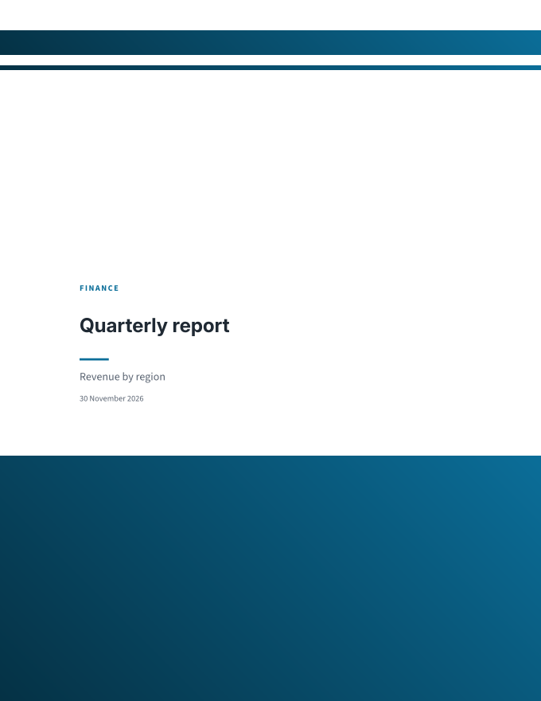 |

The decoration is only shapes and it sits behind the content. The title is dark ink on white, and the gradient band at the bottom holds nothing, so the cover text keeps its contrast.
14 Using the Tricks in a Quarto Book
A Quarto book project with format: typst uses the orange-book extension, which Quarto bundles since 1.9. It wraps the orange-book Typst package by Flavio Barisi, which is based on his original template. The package draws the cover and the chapter headings itself, and the typst-show.typ of the extension sets it up. I tested the partials in a book made with quarto create project book, with Quarto 1.11.9 and orange-book 0.7.1, and pdf-standard: ua-1 still gave a tagged PDF.
| Trick | In a book |
|---|---|
| Tokens, Headings, Code, Tables, Captions | Work as in a document, and the caption number follows the chapter, as in “Table 1.1”. |
| Header and Footer | The footer works. The orange-book header stays, because the template sets it after your partial. |
| Page Stripes | Works on every page, cover included. Load the footer partial before it, because that one holds the footer-ink state. Without it, the build stops with unknown variable: footer-ink. |
| Title Block, Cover Page, Cover Decoration | Do not use them. They replace typst-show.typ, which holds the setup of orange-book, and the book then renders as a single page. |
The supported way to change the cover is a brand file, written in the brand.yml format. The extension passes color.primary as the main colour, and the title box uses it lightened by 70%. It also passes logo.medium, which the package puts at the top of the cover, 3 cm wide. The package has other cover options, such as cover, cover-background and copyright, but the extension does not read them from the YAML.
The cover is the one thing you cannot reach with those partials. orange-book draws it as the first page, so the decoration has to target that page. This partial paints the stripes and the band on page 1 only, in the same way as the cover of the demo.
book-cover.typ
// Book cover: decorate page 1 only, because orange-book draws the cover itself. Needs 1-tokens.typ for `accent`.
#let band = gradient.linear(accent, accent.darken(55%), angle: 135deg)
#set page(background: context if here().page() == 1 {
pdf.artifact({
place(bottom, rect(width: 100%, height: 35%, fill: band, stroke: none))
place(top, dy: 12mm, rect(width: 100%, height: 10mm, fill: band, stroke: none))
place(top, dy: 26mm, rect(width: 100%, height: 2mm, fill: band, stroke: none))
})
})Load it after 1-tokens.typ, because it reads accent from there.
| Before | After |
|---|---|
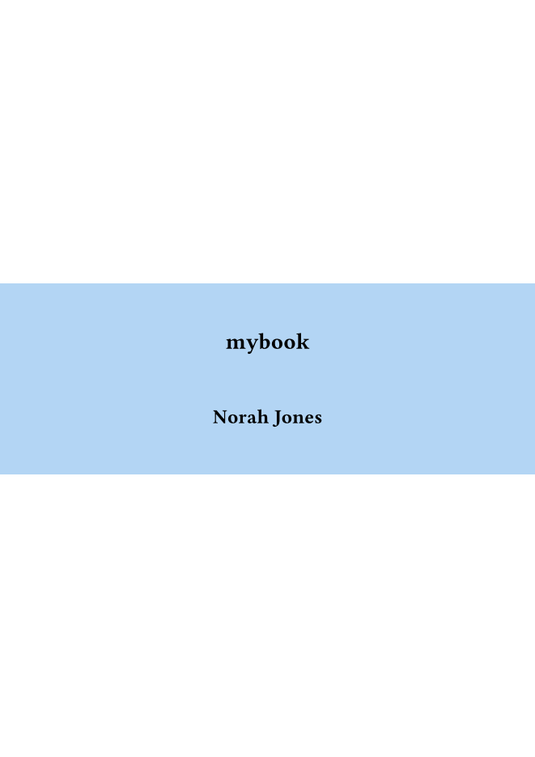 |
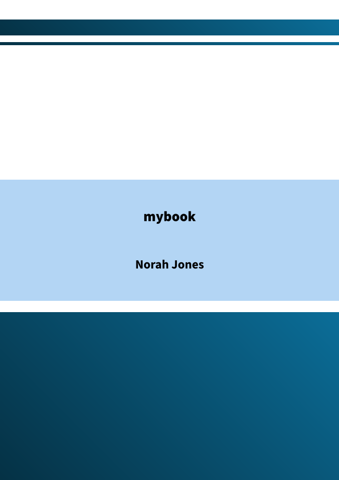 |


The title box of orange-book stays in the middle of the page, away from the gradient, so its text keeps its contrast. If you move the band under the box, check the contrast again, as for any text on a band.
15 Where to Go Next
- To package partials like these in a format extension, follow the tutorial in Part 1 and in Part 2.
- To see a branded Typst PDF built from an extension, a template and a brand file, read A Clinical Study Report in Quarto, End to End.
- To keep figures and tables in the colours of your document, read Branded Figures and Tables in R and Python with Quarto.
- To draw figures natively in Typst, read Gribouille: a Grammar of Graphics for Typst.
- To serve several document types from one format, read Document-Type Dispatching in Quarto Typst Extensions.
- To see which partials you can replace, read the custom Typst formats page of the Quarto documentation.
- To see a full example, look at quarto-mcanouil.
If you try these partials, I would like to hear how it goes. Questions are welcome in the discussions, and problems in the issues.
Reuse
Citation
@misc{canouil2026,
author = {CANOUIL, Mickaël},
title = {Professional and {Accessible:} {Ten} {Small} {Typst}
{Partials} for {Quarto} {PDFs}},
date = {2026-11-30},
url = {https://mickael.canouil.fr/posts/2026-11-30-typst-partials-tricks/},
langid = {en-GB}
}